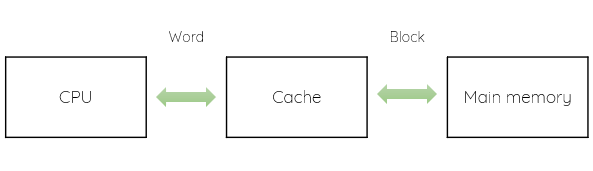
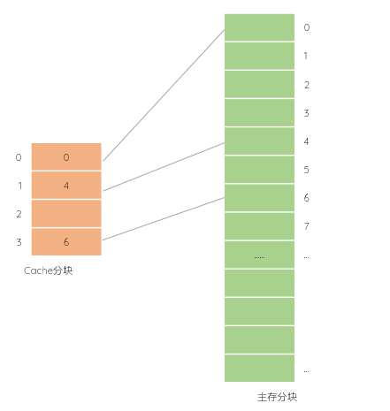
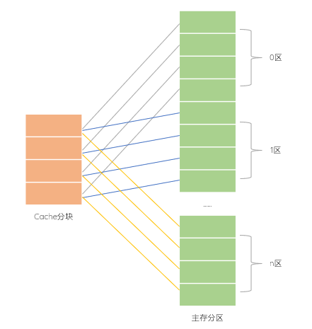
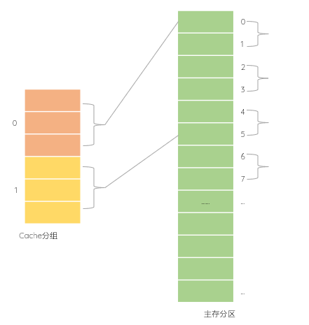

- 概述
- . 容量不大、速度很高的存储器，也叫高速缓存存储器
- . 位于CPU和主存之间，解决主存与CPU速率不匹配
- . 是主存内容的拷贝
- . 由硬件实现
- . 对程序员来说是透明的
-
. SRAM适合作为计算机的高速缓存存储器Cache. DRAM适合作为计算机的主存
-
 数据交换单位 - 局部性原理
- . 改善性能的依据：把可能再次使用或局部相关的数据读入Cache，这也是缓存的由来
- . 防止数据存取抖动
-
时间局部性：使用过的数据可能被再次使用；如循环的执行；如果只访问1次，时间局部性差，如普通数组的遍历空间局部性：使用过的数据，其相邻的数据可能被再次使用；因为指令都是按顺序执行的，如数组；如果访问顺序和存放顺序一致，则空间局部性好。如2维数组的遍历，按行列遍历的空间局部性优于按列行遍历
- CPU的读写操作
- 读：如果Cache有，则命中；否则去主存中找，并把块读入Cache，以备下次使用；也有的，只读主存，并不装载到Cache
- 写：为了保持主存和Cache的一致，可以采用直达法和写回法
-
Cache的数据更新策略 分类 说明 直达法 同步更新Cache和主存 写回法 仅当数据被替换回主存时才更新，需标记为修改状态 - "脏位" - 结构
- . 按行|块存放主存的内容，一个行包含多个字
- . 不是按字|存储单元存储。因为Cache太宝贵了，要尽量多准备一些数据供CPU使用
- . 通常1行放64个byte
- . 有多少缓存行，地址转换表|目录表就有多少行；地址转换表的容量|大小
- . Cache除了数据本身外，还有控制位，其中 有效位总是存在，算法位和脏位根据不同策略而定
- 单个Cache位数 = 数据位|块大小 +（标记位 + 有效位 + 算法位 + 脏位）
- 命中率 Cache hit
- . CPU读或者写的某一个字word是属于某个块的
- . CPU把字的内存地址发给Cache，Cache就找自己里面有没有这个地址
- . 如果有，则命中 hit：Cache再将这个块中的某个字给到CPU，完成一个高速存储访问；命中的是Cache中的一个块，而这个块是Cache从主存中取出|复制来的
- . 如果没有，则Miss：CPU需要去访问主存。虽然这样会慢一点，但是没办法，毕竟Cache中没有，就只能去主存找了
- . 如果主存全部放入Cache|大小一致，那么命中率就是100%，当然这是不可能的
- . 命中率 >= 85%，Cache的设计才算合理
- . 命中率不随其容量增大线性地提高
- . 影响命中率的因素：Cache大小、Cache的组织形式、程序特性
- 2. 其它关注
- . 放进去的数据如何替换，涉及到 数据替换策略 问题
- . 未命中的情况下|放进去的数据是不是CPU需要的数据，涉及到 未命中策略问题
- . Cache数据更新|写Cache，需要保持Cache和主存数据一致，涉及到 数据更新|一致性维护问题
- . 作为中间角色，数据的交互格式不一样，这就涉及到 数据的分块问题
- 地址映像
- . 把主存地址映像为Cache地址；通俗来说，就是把主存中的内容和Cache对应起来
- . 主存和Cache的存储空间必须划分为 大小相同 的若干块[后续表达中，对行和块视为相同，不作区分]
- . CPU拿到的是主存的全地址
- . 需要知道
-
主存大小、块大小、块数、块编址位数Cache大小、行大小、行数、行编址位数Cache某行是否可以放数据：有效位；0空闲；1占用如果可以，主存的块放在Cache哪个行
- 已知主存容量1GB，Cache容量8MB，块大小为512KB；求主存和Cache分块情况
-
块大小512KB，块内编址需要 512 = 219，19位主存容量是为1GB，则块数 = 1GB/512KB = 230/219=211（块），块编址需要11位Cache容量为8MB，则块数 = 8MB/512KB = 8*220/219=24（块），块编址需要4位∴主存编址为 块地址 + 块内地址 = 11 + 19 =30位Cache编址为 块地址 + 块内地址 = 4 + 19 =23位另：也可以由容量大小直接得出完整地址位数，再减去块内地址位数就是块地址位数，最后得出块数主存容量是为1GB，地址为30位，块内地址19位，∴块地址11位，主存可以分块211Cache容量是为8MB，地址为23位，块内地址19位，∴块地址4位，Cache可以分块24
全相联
- 说明
- . Cache 分块；主存 分块，且块大小相同
- . 主存任意block可以放到Cache任意一块block|空位任意放
- . 主存中的块在Cache中随意放（就是想放Cache中的哪一行就放哪一行，只要当前为空）
- 主存物理地址 = 标记|区号 + 块内地址
- . 需要目录表记录使用情况：缓存行是否占用；主存中第几个块|地址？放入缓存中第几行|地址？
- . 优点：冲突最小；命中率高；Cache利用率高|有空就可以放。停车 - 有空就可以随便停
- . 缺点：全比较Cache决定是哪个block；速度低。找车 - 一个挨一个找
-
 全相连 -
全相连目录表 主存地址块 Cache地址块 有效位 0 0 1 1 0 2 3 1 0 0 - 主存地址位数32位；按字节编址。主存和Cache采用全相连映射。主存块大小为1个字，每个字32位，采用回写write back方式和随机替换策略，则能存放32K字数据的Cache的总容量至少应该有多少位？
-
核心：每个Cache块的大小*Cache的块数就是Cache的总位数块大小：1个字，32bit，4字节，按字节编址，∴ 块内编址需要2bitCache块个数 = Cache容量/块大小=32K字/1字=32K主存地址32位 = 标记30bit +块内地址2bit单个Cache的位数 = 数据位32bit + 标记位30bit + 有效位1bit + 脏位1bit + 算法位0bit = 64bitCache的总位数 = 块的个数*每个字的位数 = 32K*64bit = 211Kbit = 2048Kbit
直接相连
- 说明
- . Cache 分块；主存 分区
- . 主存分区：主存按照Cache大小分区；每个区的块数=Cache的块数；所以主存容量一定是Cache的 整数倍
- . 这个倍数就是 标记的长度 ；如主存是Cache的4096倍，则标记长度为12bit
- . 主存中某个分区中的某一块，只能放入Cache对应的块号
- . 主存0区的0号块，只能放在Cache的0号位置；0区的1号块，只能放在Cache的1号位置
- . 同样的1区的第0块，只能放在Cace的0号位置，1区的第1块，只能放在Cache的1号位置
- . 所以直接映射的存储是有规律的。比如判断1区的第1个块是否在Cache中时，若在，则一定存放在Cache的1号位置
- . 如果知道主存块的编号|块号，则对应的 Cache块号 = 块号 % Cache块数
- . 随之而来的问题是，利Cache用率低，命中率低，容易出现"抖动"：块反复被替换
- . Cache中的块可以来自主存的 不同 分区；根据局部性原理，大概率是来自主存同一个分区
- . Cache拿到CPU给的地址后，会优先判断该地址属于区中的第几块，进而可以判断存放在Cache中的哪一行
- 主存物理地址 = 标记|区号 + Cache行号 + 块内地址 = 标记|区号 + Cache地址
-
 直接相连 - 主存地址位数32位；按字节编址。主存和Cache采用 直接映射 。主存块大小为4个字，每个字32位，采用回写write back方式和随机替换策略，则能存放4K字数据的Cache的总容量至少应该有多少位？
-
146k147k148k158k
-
核心：每个Cache块的大小*Cache的块数就是Cache的总位数Cache的大小 4字→4*32bit→16B，块内编址需要4bitCache的块数 4K字/4字 = 1K，块编址需要10bit主存地址32bit = 标记位 + Cache行号 + 42bit，∴ 标记位 = 32bit - 10bit - 4bit = 18bit单个Cache位数 = 4*数据32bit + 标记位18bit + 有效位1bit + 脏位1bit + 算法位0bit = 148bitCache总容量 = Cache块数*单个Cache位数 = 1K * 148bit = 148Kbit∴ C另：从倍数入手求标记位数主存容量 232*8bitCache容量 4K*32bit倍数 = 主存容量/Cache容量 = 218，∴ 标记是18bit有了标记位，就可以算出一个Cache的位数，进而算出所有的位数
- 32位计算机的Cache容量为16KB，Cache的块大小为16B。若主存和Cache采用直接相连映射，主存地址为0x1234E8F8的单元装入Cache的地址是多少？
-
00010001001101010001000110101010001111100011010011101000
-
块内地址编址需要：lb16B/1B = 4bitCache的块数有：16KB/16B=1K，∴ 块编址需要lb1K = 10bit主存地址0x1234E8F8Z转化为2进制为0001 0010 0011 0100 1110 1000 1111 1000后面的（4+10）位是Cache地址：10 1000 1111 1000；前18位是主存的标记∴ 选择C
- 主存容量是1MB，Cache容量是16KB，每块有8个字，每个字32bit。采用直接相连映射。Cache的起始字块为第0块；若主存地址为35301H，且访问CPU命中，则在Cache的第几个字块中？
-
152153154151
-
核心：求Cache行号第几个Cache行；题干说起始字块为0块大小 8*32bit = 32B，编址需要 5位Cache块数 16KB/32B = 512，编址需要 9位主存地址 35301H = 0011 0101 0011 0000 0001∴ Cache行号 010011000 = 128+16+8=152，选择A
- 某系统主存容量是Cache的4096倍；Cache分成64个块；采用直接相连映射，地址映射表的大小是多少？不考虑一致维护和替换算法。
-
6×4097bit64×12bit6×4096bit64×13bit
-
地址映射表也就是标记Tag阵列Cache有64块，即64行，采用直接映射，一行相当于一组∴ 标记阵列每行存储1个标记项其中主存标记项为12bit(212=4096，是Cache容量的4096倍，那么就是地址长度比Cache长12位)，加上l位有效位∴ 为64×13bit，选择D
- 某计算机采用主存--Cache存储层次结构，主存容量有8个块，Cache容量有4个块，采用直接映射方式。若主存块地址流为0,1,2,5,4,6,4,7,1,2,4,1,3,7,2，一开始Cache为空，此期间Cache的命中率为多少？
-
主存块号%Cache块数就是对应的Cache块号一次把主存块填入对应的Cache块中∴ 4/15=26.7%
-
示例中的Cache流 Cache块号 主存块号 0 0 4 4 4 1 1 5 1 1 2 2 6 2 2 3 7 3 7
组相连
- 说明
- . Cache 分组；主存 分区
- . Cache分组：分组大小相同，即分组的块数相同；如分为2组；物理上采用比较器实现
- . 主存分区：按Cache组数大小将各块分区，如每2块为一个区
- . Cache分几组，主存的区就分几块；注意Cache组内的块数和主存区内的块数不一定相同
- . 主存每个分区的第几块，进Cache的第几组，至于是该组的第几块则不一定
- . 主存的块和分组直接相连映像；Cache分组内是全相连映像
- . 如果知道主存块的编号|块号，则对应的 Cache组号 = 块号 % 组数
- . 冲突折中
- 主存物理地址 = 标记|区号 + 组号 + 块内地址
-
 组相连 - 有效容量为128KB的Cache块，每块16B，采用8路组相连。字节地址为1234567H的单元调入该Cache，其标记Tag是多少？
-
块大小16B，∴ 块内编址需要 lb16 = 4bitCache块数为128KB/16B = 8K，再按8路划分组，共有 8K/8 = 1K个分组，∴ 组编址需要lb1k = 10bit地址1234567H = 0001 0010 0011 0100 0101 0110 0111；中间10位是组号，后4位是块内地址∴ 标记Tag为：0001 0010 0011 01= 00 0100 1000 1101 = 048DH
- 某计算机的Cache共有16块，采用二路组相联映射方式（即每组2块）。每个主存块大小为32Byte，按字节编址。主存129号单元所在主存块应装入到的Cache组号是什么？
-
注意：这里是129号内存单元，不是主存的块号！！！真尼玛坑；其实题干也提到了该单元所在的主存块，那就说明129不是主存块号地址法：块大小32B，块内编址需要 lb32=5位组数为 16/2 = 8，组编址需要lb8=3位129对应着第129号内存单元 = 100 00001∴ 对应的Cache组为4求模法：129号对应的块数 = 129%32 = 4，第4个块∴ Cache组 = 块号 % 组数 = 4 % 8 = 4
- 主存按字节编址；Cache共64行，采用4路组相连映射；主存块大小32字节，所有编号从0开始，则第2593号存储单元所在主存块的Cache组号是多少？Cache中 比较器 的个数和位数分别是多少？
-
地址法：主存块大小32字节，块内编址需要 lb32 = 5位组数为 64/4=16组，组编址需要lb16 = 4位2593 = 1010 0010 0001∴ 对应的Cache组为1求模法：2593号对应的块数 = 2593%32 = 81，第81个块∴ Cache组号 = 块号 % 组数 = 81 % 16 = 1比较器的个数就是组大小：4路→4个比较器的位数就是标记Tag的位数 3位
-
主存存储单元：按字节存储，一个字节编为1个地址；地址是多少，就对应着几号存储单元；反之亦然
替换算法
- . 在Cache中找不到数据，需要查找主存：如何把数据替换进来
- 先进先出 FIFO
- . 先进来的被替换
- 随机替换RAND
- . 使用随机数发生器产生1个块，把它替换出去
- 近期很少使用LRU-Lately Rare Used
- . 使用计数器统计Cache每个块的使用情况：没有访问，+1；访问或被替换，置0
- . 把数字大的替换出去
- . 计数器又称年龄计数器，老的被替换出去
- . 需要额外开销
- 优化替换OPT
- .